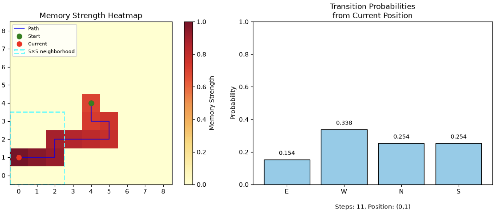
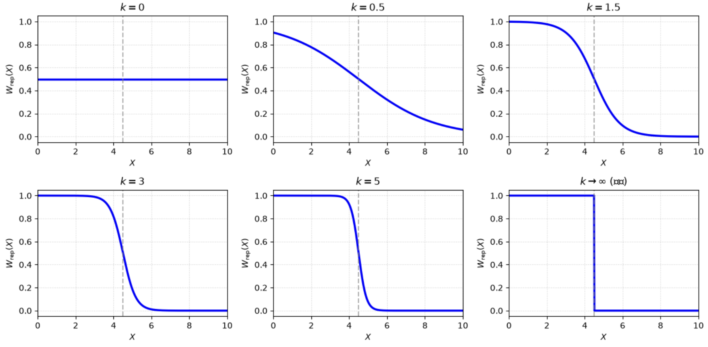

Memory, Repulsion, and Attraction: Phase Transitions in Non-Markovian Random Walks on a Two-Dimensional Lattice
- Non-Markovian random walk
- Monte Carlo simulation
- Nonlinear regression
- Parameter sensitivity
Abstract
This paper studies a non-Markovian random walk on a 100×100 two-dimensional lattice in which the walker remembers past visits, avoids recently visited neighborhoods, and can be drawn back toward the origin. The model combines an exponentially decaying memory field, Logistic soft repulsion based on a 5×5 local memory intensity, and an optional central attraction. Across 10,000 baseline Monte Carlo trials, the pure repulsive walker escaped with probability 100% and a mean escape time of 722.69 steps, much faster than the roughly 2,500-3,000 steps of a classical simple random walk. Nonlinear regression gives strong exponential scaling laws in the memory decay rate, repulsion threshold, and Logistic steepness; increasing central attraction produces a sharp exploration-return phase transition. The results provide numerical evidence that memory and repulsion change the classical recurrence behavior of the two-dimensional random walk.
Core research question
What happens to recurrence, transience, and escape time when a two-dimensional random walker is given a decaying memory of past visits, a soft local repulsion from recently visited regions, and a competing attraction back toward the origin?
- How does the memory decay rate affect escape efficiency, and is there an optimal intermediate regime?
- How sensitive is the walker to the repulsion threshold, and can a small change cause a dramatic shift?
- Does central attraction only slow escape, or can it qualitatively reverse the walker's fate?
- Is the memory-repulsion walker ultimately transient or recurrent?
Main findings
- Pure repulsion is numerically transient. All 10,000 baseline trials escaped; the mean was 722.69 steps, the median was 579, the 95% CI was [712.88, 732.49], and the maximum was 4,886. A classical simple random walk needs roughly 2,500-3,000 steps under the same setting.
- Three strong scaling laws emerged. τ(k) = 1608.628e−2.4155k + 666.870 (R² = 0.9956), τ(c) = 138.880e0.3002c + 13.487 (R² = 0.9930), and τ(λ) = 659.880e8.7348λ − 193.017 (R² = 0.9877).
- Central attraction causes a sharp phase transition. Mean escape times are about 2,700 steps at α = 0.2, 7,800 at α = 0.3, 28,000 at α = 0.4, and 120,000 at α = 0.5.
- Classical behavior requires extreme parameters. The model approaches the memoryless case only near k ≈ −0.15, c ≈ 10.2, or λ ≈ 0.18.


Research-to-model summary
- Question
- How do decaying memory and Logistic repulsion alter escape time and recurrence on a two-dimensional lattice, and how does a central attraction change the outcome?
- Assumptions
-
- The walker moves on a 100×100 square lattice with an absorbing boundary and starts at (50,50).
- A site's memory is the maximum exponentially decaying contribution from its past visits.
- Repulsion depends on total memory in a 5×5 neighborhood and is softened with a Logistic function.
- Central attraction depends on whether a move steps toward or away from the origin.
- Model
- Composite transition weight = repulsion × attraction. Baseline parameters are k = 1.5, c = 5.5, and λ = 0.04; attraction strength α is scanned from 0 to 0.5.
- Test
- 10,000 baseline simulations; 1,000 simulations per scanned parameter value; nonlinear regression against k, c, and λ; and a 500,000-step infinite-plane run to count returns to the origin.
- Result
- Pure repulsion escaped 100% of the time with mean 722.69 steps and median 579, well below the classical 2,500-3,000 steps. Increasing α drives a phase transition: about 2,700 steps at α = 0.2, 7,800 at 0.3, 28,000 at 0.4, and 120,000 at 0.5.
- Limitation
- The recurrence and transience claims are numerical rather than rigorous proofs, and the findings are specific to the 2D square lattice, parameter ranges, and max-based memory rule.